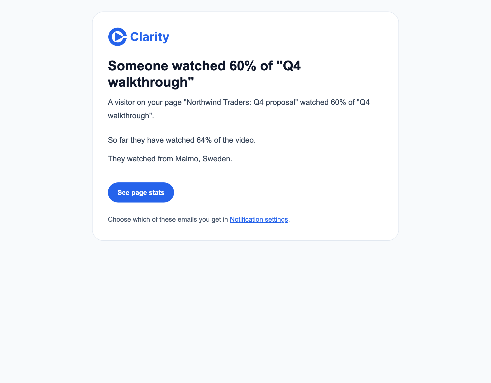
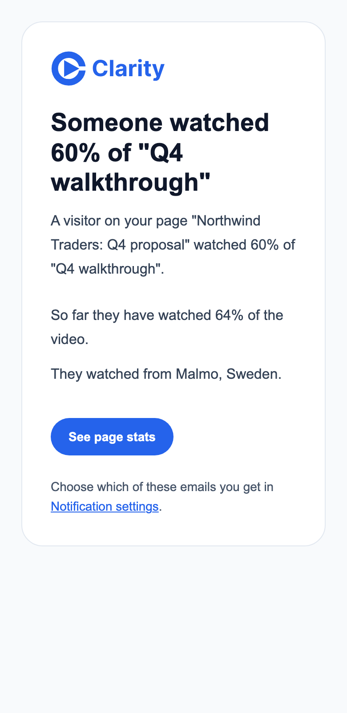
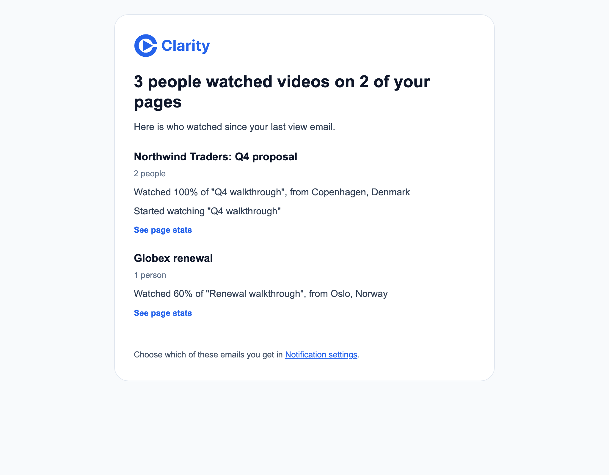
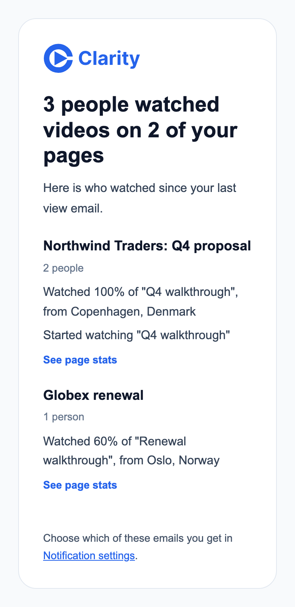

Rendered with the real templates from the batching branch. Every name, page and place is made up.
An owner gets at most one view email an hour. The first view after a quiet hour sends the instant email at once. Views in the hour after it wait, and the minute cron sends them as one summary when the hour is up. A summary that holds only one viewer uses the instant email.
The first view after a quiet hour. Here a viewer in Malmo passed 60% of the video.
Subject. Someone watched 60% of "Q4 walkthrough"


Someone watched 60% of "Q4 walkthrough" A visitor on your page "Northwind Traders: Q4 proposal" watched 60% of "Q4 walkthrough". So far they have watched 64% of the video. They watched from Malmo, Sweden. See page stats: https://clarity.video/home?stats=pg_northwind Choose which of these emails you get in Notification settings: https://clarity.video/settings/notifications
Three viewers across two pages. The Copenhagen viewer crossed 0%, 60% and 100% within the hour and appears once, at 100%.
Subject. 3 people watched videos on 2 of your pages


3 people watched videos on 2 of your pages Here is who watched since your last view email. Northwind Traders: Q4 proposal 2 people Watched 100% of "Q4 walkthrough", from Copenhagen, Denmark Started watching "Q4 walkthrough" See page stats: https://clarity.video/home?stats=pg_northwind Globex renewal 1 person Watched 60% of "Renewal walkthrough", from Oslo, Norway See page stats: https://clarity.video/home?stats=pg_globex Choose which of these emails you get in Notification settings: https://clarity.video/settings/notifications